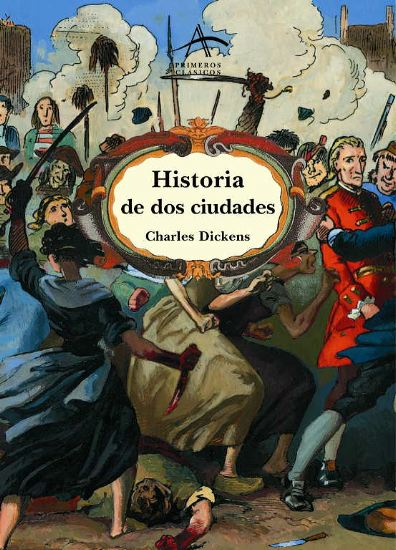

La historia transcurre entre dos ciudades, Londres y París, durante la época de la Revolución Francesa. La indiferencia de Dickens por la política y su desprecio por los políticos alejan la novela de cualquier debate político o filosófico sobre la revolución. Sin embargo, al suprimir dichos debates en torno a los acontecimientos revolucionarios, Dickens otorga a las masas populares francesas un protagonismo, autonomía y actividad histórica que no tuvieron, presentando además la revolución como justo castigo a la aristocracia por los siglos de explotación y maltrato del pueblo.
Los protagonistas envueltos en un triangulo amoroso, donde se presenta la desesperación, el amor y el sacrificio en una época funesta para la sociedad francesa, el nacimiento de una conspiración ante los abusos de una clase gobernante para desencadenar hechos sangrientos y crueles para cada poblador que debe cuidar el minimo de detalle de vinculo con la realeza y no pasar por el cadalso. El tercer protagonista ante el amor no correspondido opta por la suplantacion y el sacrificio a fin de que ella sea feliz, hasta el ultimo instante en la guillotina manifiesta su verdadero amor hacia ella que siente culpa por dicha muerte de no solo uno, sino muchos inocentes. Transcurren a lo largo de la trama personajes como Luis XVI, la reina Maria Antonieta, los lideres revolucionarios Danton, Robespierre y Marat.